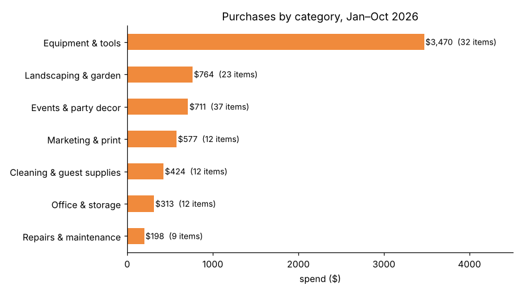
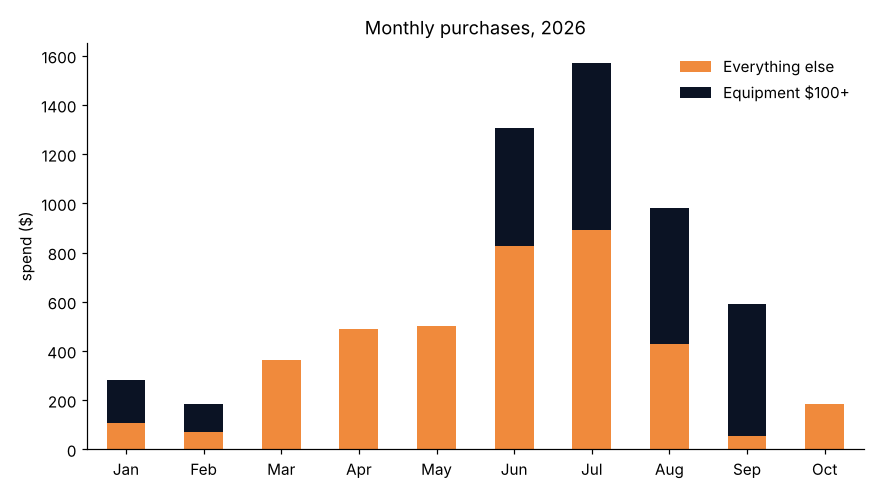
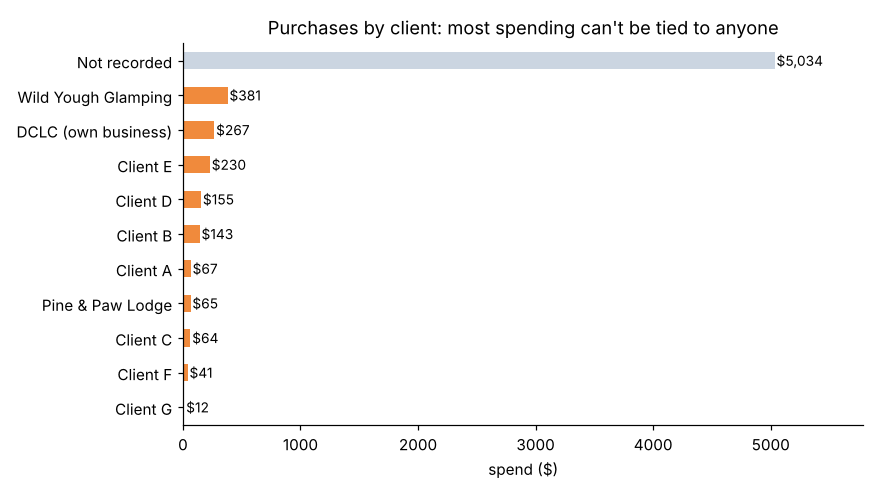
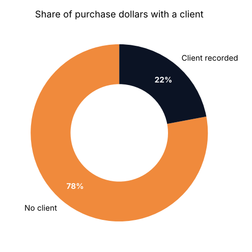

$6.5KPurchases analyzed
137Purchases, plus 16 meals and 14 trips
78%Of spending with no client recorded
10Months of data (2026)
Key findings
| Question | Finding | Recommendation |
|---|---|---|
| Where the money goes | Equipment & tools is 54% of purchases ($3,470). Just 10 one-off buys of $100+ (drone, pressure washer, ladder, trimmer, card terminal) make up 39% of the year. | Track big equipment separately from day-to-day supplies so routine costs are visible. |
| Seasonality | June–August is 60% of the year's purchases; July alone is $1,572. | Budget for a summer spike and buy landscaping and event supplies before June. |
| Events | Party and wedding decor is 37 items and $711, the most items of any category, and 76% of it has no client attached. | Treat event decorating as its own service line and price it to cover supplies. |
| Job costing | 78% of purchase dollars ($5,034) have no client, so cost per client can't be calculated. Order-history imports from Amazon and Lowe's are almost all untagged. | Make client a required dropdown in the log form. |
| Trips | October: 14 trips, 227 miles, $173 in mileage value. Pine & Paw Lodge is the top destination (85 miles, 37%). No trips were logged before October, though meals show client visits back to June. | Log every trip when it happens; earlier mileage is lost. |
| Data quality | 93% of purchases are categorized just "Supplies"; vendors are spelled several ways; 23% have no receipt; one fuel fill-up; everything was entered Oct 17–28. | Use dropdowns for category and vendor, require a receipt photo, log fuel with the odometer each fill-up. |
Charts




Method
- Data: the DCLC Vehicle & Expense Log, a phone form I built that writes to a Google Sheet, Jan 23 – Oct 31, 2026. Private client names were replaced with Client A, B, C…, and receipt links and addresses were removed.
- Data-quality check: profiled every field before analysis. Found the category field almost always "Supplies", inconsistent vendor spellings, missing clients and receipts, and that the whole log was back-filled in late October.
- Cleaning: standardized vendor and client names, rebuilt a useful spending category from each item description with keyword rules, flagged $100+ equipment, and reviewed repeated lines (kept as multi-quantity orders; one likely double entry noted).
- Analysis: spend by category, month and client in pandas; mileage value using the rate in effect on each trip date. The same questions are answered in SQL with window functions (SUM OVER, RANK, running totals, LAG).
Files
Limitations: about 10 months of data from one small business; purchases were entered after the fact from order history; trips cover October only, so mileage is a snapshot; categories are rebuilt with keyword rules and may misplace a few items.
← Back to all projects